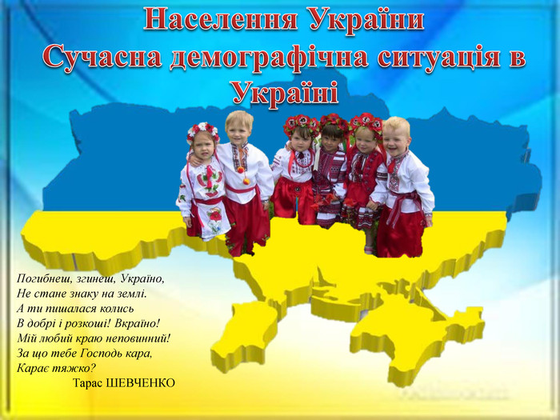
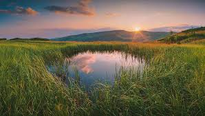
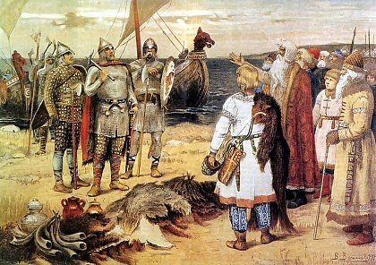
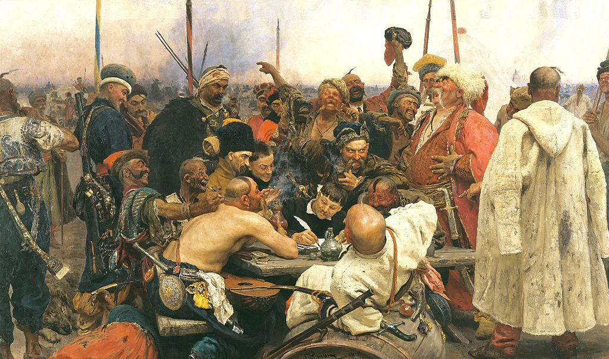
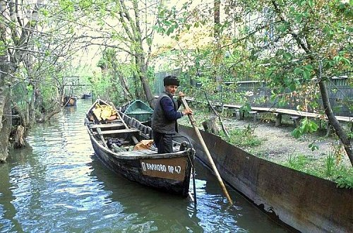
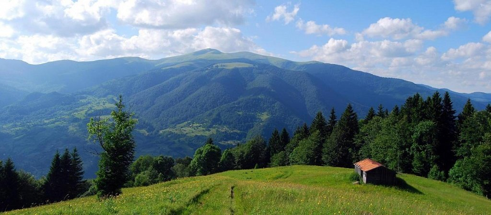
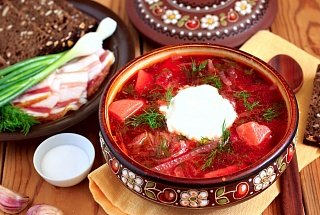
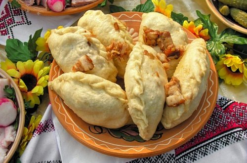

Україна – колоритна багатонаціональна країна, що володіє хорошим потенціалом для розвитку туристичного напрямку. Велика розмаїтість традицій, які виникли від змішання різних культур, роблять її неповторною. Кожен регіон має свої особливості. Населення держави складає трохи більше 42,5 мільйонів чоловік на території площею 603 549 м², що дозволяє йому залишатися одним з найбільших в Європі.
Незважаючи на економічні труднощі і численні політичні реформи, які переживає держава, вона залишається привабливою для туристів зі всього світу. Відпочивальники приїжджають сюди, щоб ближче познайомитися зі звичаями краю, оздоровитися в численних санаторіях, насолодитися історичними та культурними пам’ятками. Україна може запропонувати будь-які варіанти відпочинку: від міського до пляжного.
Україна – країна, розташована в південно-східній частині європейської частини материка Євразія, має площу 603,7 тис. Км 2 (близько 5,7% території Європи і 0,44% території світу). Має кордони на півночі з Білоруссю, на заході – з такими країнами як Польща, Словаччина і Угорщина, на південному заході – з Румунією і Молдовою, на сході і північному сході – з Росією. Південні кордони омиваються водами Чорного і Азовського морів. Населення за даними на 2017 рік становить 42, 3 мільйони людей. Україна – унітарна парламентсько-президентська республіка, очолювана президентом. Її столиця і найбільший мегаполіс – Київ.
Фізико-географічне положення
Територія України розташовується в межах Східно-Європейської рівнини, її протяжність заходу на схід – 1316 км, з півночі на південь – 893 км. На території Закарпатської області поблизу міста Рахова проходить географічний центр Європи, позначений в кінці 19 століття військовими Австро-Угорської імперії, про це свідчить встановлена тут пам’ятна стела.
Населення України
На 2017 рік становить 42, 4 мільйони людей (32 місце в світі), найбільша його частина заселяє індустріально розвиток райони на сході України і Прикарпатті, там найвища щільність населення (118-173 чол / км 2 ). Найменша щільність в Карпатах, Поліссі та півдні України (50-39 чол / км 2 ). Найбільші міста, з населенням більше мільйона чоловік – Київ, Харків, Одеса.
Природа
Гори і рівнини
Велика частина країни представлена рівнинною поверхнею (частка низовин (Причорноморська, Поліська, Придніпровська, Закарпатська) – 71%, височин – 26%, гір – 3%). Українські гори Карпати розташовані в південно-східній частині української держави, їх найвища точка – гора Говерла, 2061 м. На півдні України, в Херсонській області, розташований найбільший пустельний масив на території всієї Європи – Олешківські піски.
Річки
На території України налічується понад 70 тисяч річок і струмків, загальною протяжністю в 248 тисяч км. Більшість річок належить басейнам Чорного і Азовського морів, всього 4% – басейну Балтійського моря. Велика частина річок тече з північного заходу на південний схід, відповідно до ухилів рельєфу. Найбільш великими українськими водними артеріями вважаються Дніпро (має протяжність 2285 км, третє місце в Європі, з них 1090 км протікає по території України) Дністер, Дунай, Прип’ять, Південний Буг, Західний Буг, Тиса, Десна, Сіверський Донець
Озера і лимани
По всій Україні знаходиться велика кількість озер (до 20 тисяч), найбільші з них – Синевир в Поліссі, солоне озеро Ялпуг в пониззі Дунаю. Лісостепова зона забезпечена водними ресурсами набагато краще, ніж зона степів і Донецького кряжу.
Моря, що омивають Україну
Україна омивається на півдні Чорним і Азовським морями, що належать басейну Атлантичного океану, межує з Чорним морем з Болгарією, Туреччиною і Грузією. За допомогою проток, що з’єднують моря з водами Світових океанів, Україна має можливість розвивати торговельні відносини з іншими країнами. Порти і бухти морів використовуються в якості стоянок як для вітчизняних, так і зарубіжних кораблів. Акваторія морів багата біологічними ресурсами, з їх дна видобуваються такі корисні копалини як нафта і природний газ. Узбережжя морів мають важливе рекреаційно-туристичне значення.
Ліси
В Україні загальна площа лісових фондів становить 10,4 мільйона га (17, 2% всієї території країни), лісова рослинність росте на 9, 5 мільйони га, середня лісистість по території України становить близько 16%, один з найнижчих показників в Європі. Найбільша рівень лісистості спостерігається в Карпатах (32%). Найпоширеніші породи дерев – сосна, бук, ялина, дуб.
Рослини і тварини України
Флора і фауна України відрізняється богатством і різноманітністю, тут мешкає близько 70 тисяч видів живих організмів.
В зоні лісів до цих пір зустрічаються ведмеді, дикі кабани, лосі, косулі, зайці, вовки, лисиці, борсуки.
Серед пташок багато рябчиків, куропаток, глухарів і т.д.
Лісостепна зона – дім для сусликів, хорьків, куниць, диких кабанів і оленів.
Із птахів тут живуть куропатки, сороки, ворони, горобці. В невеликих населених пунктах часто зустрічаються білі лелеки.
В степах живуть суслики, тушканчики, польові миші, хом’яки, лисиці, їжаки, жайворонки, перепілки, степові журавлі, степові миші і гадюки. Велика кількість видів диких тварин знаходиться в державному заповіднику Асканія-Нова (південь України, Херсонська область).
На території України росте близько 16 тисяч видів рослин, внаслідок того, що в країні спостерігається високий відсоток розораності земель (особливо в степовій зоні), природна рослинність збереглася в основному в заповідниках і заказниках.
Україна лежить в таких природних зонах як соснові і мішані ліси, лісостепи і степи. Для лісової зони характерна лісова рослинність з виростання таких дерев як ялиця, сосна, дуб, бук, граб, береза, для лісостепу – липи, клени, ясени, різні чагарники, для степу – різнотрав’я, штучні лісонасадження.
Клімат України
Клімат – помірно-континентальний, в Карпатах – гірський. Літній період жаркий і посушливий на сході і півдні, теплий і вологий – на заході. Зимовий період з відносно теплою зимою – це південь і захід, низькі температури і холод – північний схід.
Природні ресурси
Україна має значні запаси таких паливно-енергетичних природних ресурсів як кам’яний (Донецький і Львівсько-Волинський вугільні басейни) і буре вугілля (Дніпровський басейн, територія Закарпатської, Харківської та Полтавської областей), горючі сланці, торф, при гострому дефіциті нафти і природного газу, що викликає значні труднощі у розвитку економіки країни.
Також на Україні зосереджені значні запаси (10% всіх світових запасів) руд чорних металів (Криворізький, Кременчуцький, Білозерський та інші Железнорудний басейни). Повсюдно поширені великі запаси будівельних матеріалів (глини, каоліну, крейди, вапняку і т.д.).
Корисні копалини України
Основні корисні копалини видобуваються і обробляються на території країни: залізна руда, вугілля, марганець, природний газ, нафту, сіль, сірка, графіт, титаниум, магній, каолін, нікель, ртуть, деревина.
Промисловість і сільське господарство України
Основні корисні копалини видобуваються і обробляються на території країни: залізна руда, вугілля, марганець, природний газ, нафту, сіль, сірка, графіт, титаниум, магній, каолін, нікель, ртуть, деревина.
Історія України
Сучасні українці – нащадки давніх слов’ян, які колись витіснили з цієї території скіфів і сарматів.
Приблизно в 5 столітті. виникли перші князівські об’єднання, які дали початок становленню державності. 882 рік – дата заснування Київської Русі, столицею якої став Київ.
Це була розвинена в економічному і культурному плані держава, що мала достатню військову міць, щоб тривалий час протистояти численним набігам кочівників і постійно розширювати свої території. Важлива віха в долі не тільки Київської Русі, а й усього православного світу, – прийняття християнства в 988 році.
Історія процвітаючої держави практично закінчується після завоювання його монголо-татарами, а пізніше Великим князівством Литовським. Надалі територія була поділена між Молдавським князівством, Угорським королівством і Золотою Ордою, Польщею та литовською державою.
Нова сторінка в історії українського народу – створення Гетьманщини з центром в Запорізькій Січі. Це було унікальне державне утворення, яке починалося як об’єднання козаків – так називали себе етнічні українці, які з різних причин тікали з території Речі Посполитої і Російського царства.
Найбільші повстання припали на 17 століття – під проводом Богдана Хмельницького були відвойовані значні території як в східному, так і в західному напрямках. Неможливість протистояти військовій силі сусідніх держав стала причиною проведення Переяславської ради, в результаті якої було підписано угоду з Москвою – Україна на довгий час опинилася поділена на Лівобережну і Правобережну.
Пам’ятки і екскурсії
В Україні дуже багато дивовижних місць, побачити які потрібно кожному. В першу чергу, вражає багатство природи цього краю. Щоб викупатися в теплому морі, полежати на золотистих піщаних пляжах, варто вирушити на південь: курорти Чорного і Азовського морів щорічно приймають тисячі туристів. Відпочиваючі можуть зупинитися в фешенебельних готелях, затишних пансіонах або приватних будинках. Крім морського узбережжя, дельфінаріїв і аквапарків іноземці можуть також відвідати унікальний біосферний заповідник «Асканія-Нова». Тут в природних умовах гуляють на волі зебри, антилопи канна, бізони, верблюди, табуни коней Пржевальського. Дістатися сюди можна на авто чи автобусі, попередньо замовивши екскурсію.
Ще одна перлина півдня України – Одеса. Це один з найбільш самобутніх міст, який відразу ж завойовує симпатію, завдяки неповторному говору і унікальному гумору. Приїхавши сюди, обов’язково потрібно відвідати Приморський бульвар, сфотографуватися на Потьомкінських сходах і на тлі колонади, купити квиток на виставу в одному з найкрасивіших оперних театрів Європи, прогулятися по Дерибасівській.
Карпати – справжній скарб країни. Взимку тут можна покататися на лижах чи сноуборді, зустріти Новий рік в хатинці пастуха на вершині гори, навесні відправиться в долину нарцисів, влітку – піднятися на полонину і спробувати відшукати квітку едельвейса, спуститися по гірській річці, а восени – назбирати білих грибів. Також обов’язково варто відвідати солоні озера в Солотвино, термальні басейни в Берегово, озеро Синевир, страусину ферму в Хусті, скуштувати найкращі сири та марочні вина Закарпаття в селі Нижнє Селище. Круглий рік відпочиваючих приймають численні санаторії та лікарні: цей край славиться своїми природними мінеральними джерелами.
Кулінарні особливості
Українська кухня дуже різноманітна і по праву вважається однією з найбагатших не тільки в Європі, але і в світі. При цьому вона відрізняється практичністю. З приправ традиційно використовуються тільки найдоступніші: сіль, перець, кріп, свіжа і сушена зелень петрушки, базилік і т.д.
Оскільки здавна серцем домівки українських сімей була піч, основними способами готування є варіння, запікання і тушкування, набагато менше поширення отримали смажені страви. Варто відзначити, що завдяки даним особливостям продукти зберігають більшість вітамінів.
Одним з постійних атрибутів української кухні є сало. Його подають на стіл солоним, копченим, маринованим. Також воно використовується як інгредієнт інших страв.
Приїхавши в Україну, обов’язково варто скуштувати вареників. Вони, на відміну від аналогічного страви інших слов’янських народів, можуть мати найрізноманітнішу начинку: тушковану капусту, картоплю, гриби, лівер, сир, бринзу, фрукти і ягоди. Залежно від того, солодкі або солоні вареники, їх можуть подавати з маслом, сметаною, молоком, медом або «Вишкварко» – порізаним дрібними шматочками обсмаженою салом.
